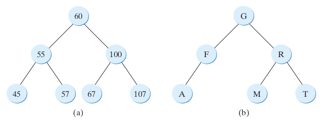
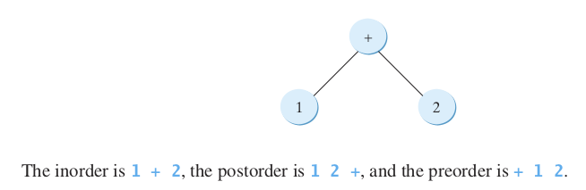

To design and implement a binary search tree (§25.2).
To represent binary trees using linked data structures (§25.2.1).
To search an element in a binary search tree (§25.2.2).
To insert an element into a binary search tree (§25.2.3).
To traverse elements in a binary tree (§25.2.4).
To design and implement the Tree interface, AbstractTree class, and the BST class (§25.2.5).
Objectives
To delete elements from a binary search tree (§25.3).
To display a binary tree graphically (§25.4).
To create iterators for traversing a binary tree (§25.5).
To implement Huffman coding for compressing data using a binary tree (§25.6).
Introduction
A tree is a classic data structure with many important applications.
Binary Search Trees (25.2)
Binary Search Trees
A binary search tree can be implemented using a linked structure.
Binary Trees
Binary Search Trees
Binary Trees
root
left/right subtree
length
level
siblings
left/right child
leaf
Binary Search Trees
A special type of binary tree called a binary search tree (BST) is often useful.
A BST (with no duplicate elements) has the property that for every node in the tree, the value of any node in its left subtree is less than the value of the node, and the value of any node in its right subtree is greater than the value of the node.
Tree traversal is the process of visiting each node in the tree exactly once.
There are several ways to traverse a tree, including:
inorder
postorder
preorder
depth-first
breadth-first
Inorder Traversal
With inorder traversal, the left subtree of the current node is visited first recursively, then the current node, and finally the right subtree of the current node recursively.
The inorder traversal displays all the nodes in a BST in increasing order.
Postorder Traversal
With postorder traversal, the left subtree of the current node is visited recursively first, then recursively the right subtree of the current node, and finally the current node itself.
An application of postorder is to find the size of the directory in a file system.
Preorder/ Depth-First
With preorder traversal, the current node is visited first, then recursively the left subtree of the current node, and finally the right subtree of the current node recursively.
Depth-first traversal is the same as preorder traversal.
An application of preorder is to print a structured document.
As shown in Figure 25.6, you can print a book’s table of contents using preorder traversal.
BFT
With breadth-first traversal, the nodes are visited level by level.
First the root is visited, then all the children of the root from left to right, then the grandchildren of the root from left to right, and so on.
Memory Device
You can use the following tree to help remember inorder, postorder, and preorder.
BST Traversal
25.2.5 The BST Class
25.3 Deleting Elements from a BST
To delete an element from a BST, first locate it in the tree and then consider two cases—whether or not the node has a left child—before deleting the element and reconnecting the tree.
25.4 Tree Visualization and MVC
You can use recursion to display a binary tree.
25.5 Iterators
BST is iterable because it is defined as a subtype of the java.lang.Iterable interface.
25.6 Case Study: Data Compression
Huffman coding compresses data by using fewer bits to encode characters that occur more frequently. The codes for the characters are constructed based on the occur- rence of the characters in the text using a binary tree, called the Huffman coding tree.
Chapter Summary
Key Points
A binary search tree (BST) is a hierarchical data structure. You learned how to define and implement a BST class, how to insert and delete elements into/from a BST, and how to traverse a BST using in order, postorder, preorder, depth-first, and breadth-first searches.
An iterator is an object that provides a uniform way of traversing the elements in a container, such as a set, a list, or a binary tree. You learned how to define and implement iterator classes for traversing the elements in a binary tree.
Huffman coding is a scheme for compressing data by using fewer bits to encode characters that occur more frequently. The codes for characters are constructed based on the occurrence of characters in the text using a binary tree, called the Huffman coding tree.